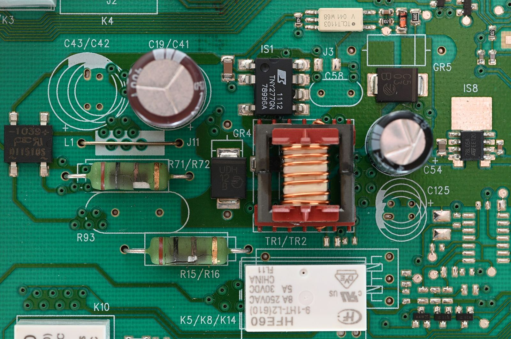
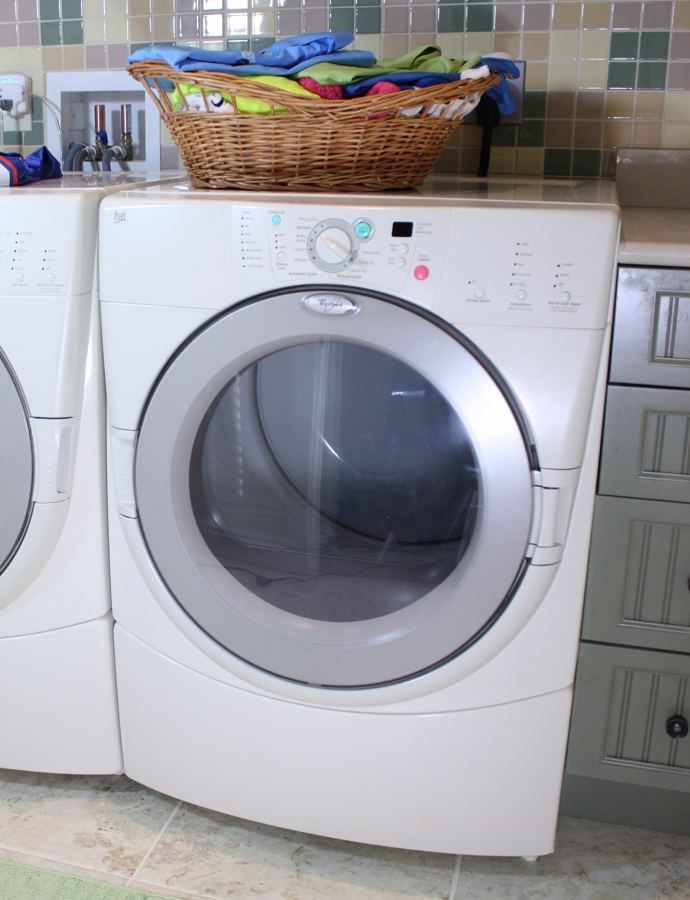
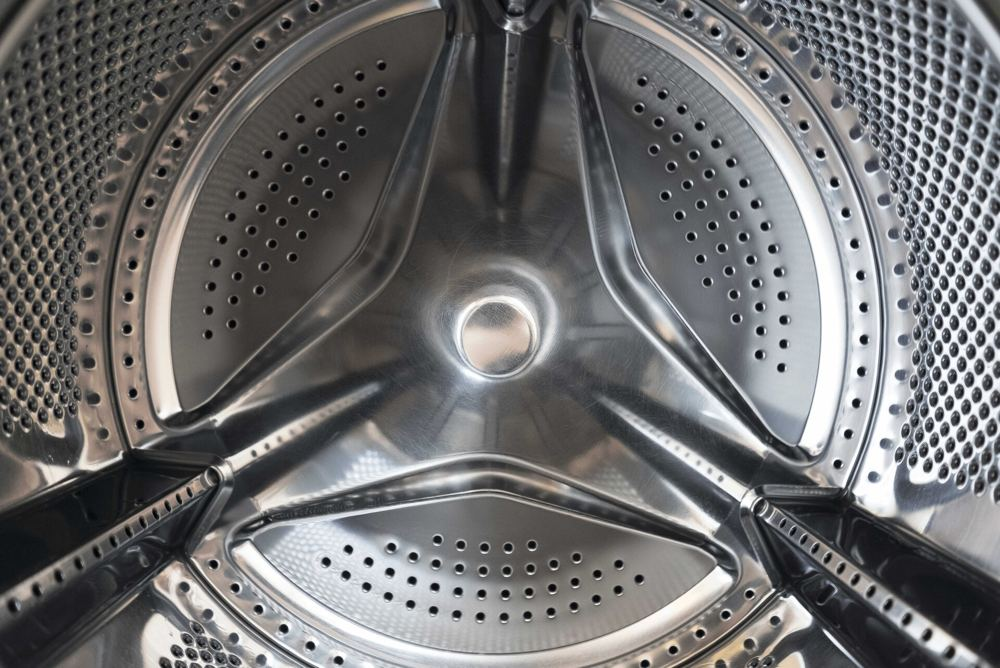
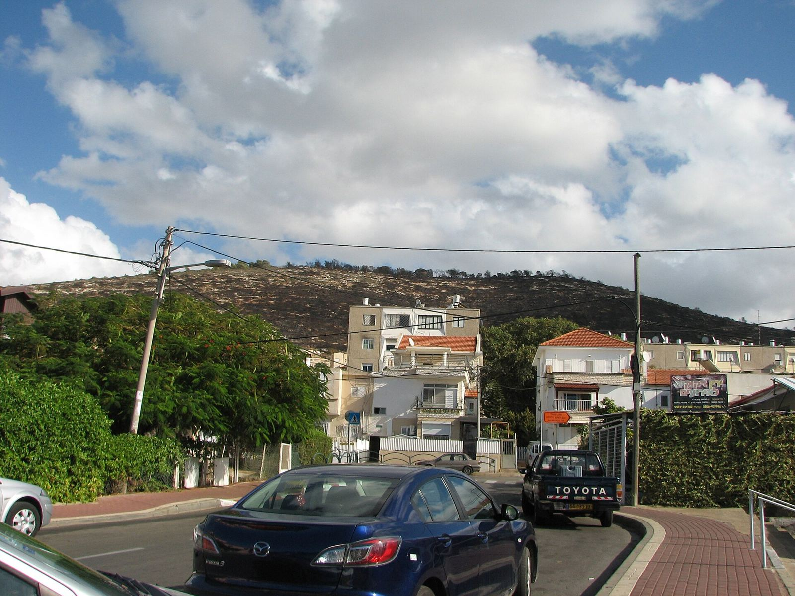

מכונות כביסהWashing machines
פתח עליון או פתח קדמי.Top-loading or front-loading.
קונספט לדוגמה שנבנה עבור חץ, שירות מקצועי לתיקון מוצרי חשמל ביתיים בטירת הכרמל · זה אינו האתר הרשמי של העסקA sample concept built for Hetz, home-appliance repair in Tirat Carmel · This is not the business’s official website
חץ – שירות מקצועי לתיקון מוצרי חשמל ביתיים בטירת הכרמל. ציון מגיע אליכם ומטפל במכונות כביסה, במקררים ובמוצרי חשמל נוספים.Hetz – professional home-appliance repair in Tirat Carmel. Tzion comes to you and works on washing machines, fridges and other home appliances.
תמונות להמחשהIllustrative photos

בודקים את המכשיר מבפנים, רכיב אחרי רכיב, עד שמגיעים למקור.The appliance is checked from the inside, part by part, down to the source.
תמונה להמחשה: כרטיס של מכונת כביסהIllustrative photo: a washing machine board
מוצרי חשמל ביתיים, אצלכם בבית.Home appliances, in your home.
פתח עליון או פתח קדמי.Top-loading or front-loading.
תיקון ותחזוקה שוטפת.Repair and routine upkeep.
37 ביקורות בגוגלGoogle reviews

כתבו לציון מה המכשיר שלכם.Tell Tzion what your appliance is.

כל התמונות באתר הן תמונות להמחשהAll photos on this page are illustrative
על איזה מכשיר מדובר?Which appliance?
מה קורה לו?What is it doing?
איש מקצוע ישר ואמין. מחירים הוגנים. עושה מאמץ להגיע בהקדם האפשרי. שביעות רצון הלקוח לנגד עיניו. מומלץ בחום.
An honest, reliable professional. Fair prices. Makes an effort to come as soon as possible. Customer satisfaction is what he keeps in front of him. Warmly recommended.
ציון הגיע בזמן, טיפל בצורה מקצועית ויעילה בתקלה. בנוסף, ביצע תחזוקה שוטפת במקרר ונתן טיפים לשימור המקרר ועזר בהרכבה והכל במחיר הגון.
Tzion arrived on time and dealt with the fault professionally and efficiently. He also did routine maintenance on the fridge, gave tips for keeping it in good shape and helped with the installation, all at a fair price.
שירות מקצועי, יעיל והגון ציון איתר את התקלה תוך דקות ואחרי שהתקבלה החלטה לא להשקיע בתיקון, ביקש סכום הגון לכל הדעות עבור האבחון והביקור.
Professional, efficient and decent service. Tzion found the fault within minutes, and after the decision was made not to invest in the repair, he asked a fair amount by any measure for the diagnosis and the visit.
מוצרי חשמל ביתיים, כמו מכונות כביסה ומקררים. כתבו לו מה המכשיר שלכם ובדקו איתו.Home appliances such as washing machines and refrigerators. Message him with your appliance and check with him.
לקוחות מספרים בביקורות שציון אמר להם את זה בגלוי, וההחלטה נשארה בידיים שלהם.Customers write in their reviews that Tzion told them so openly, and the decision stayed in their hands.
ברחוב הרב וינרוב 18, טירת הכרמל.18 HaRav Weinrob St, Tirat Carmel.
ראשון עד חמישי 8:00–18:30, שישי 8:00–13:30. בשבת סגור.Sunday to Thursday 8:00–18:30, Friday 8:00–13:30. Closed on Saturday.
